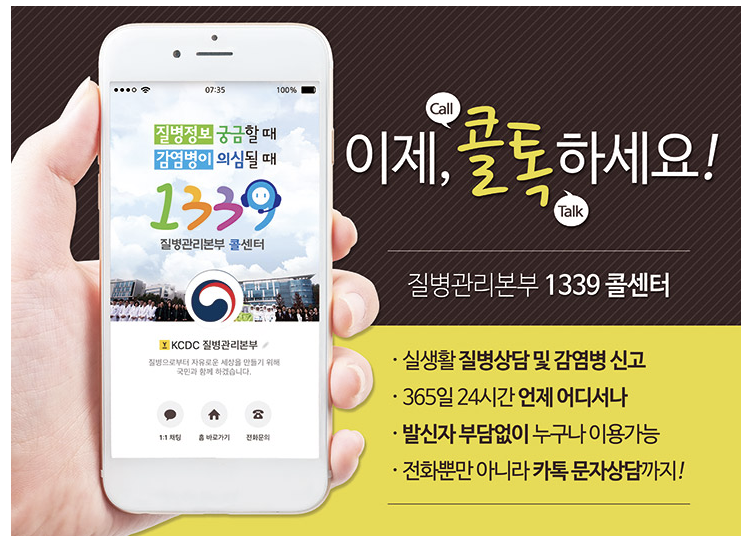
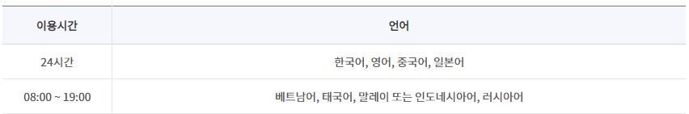
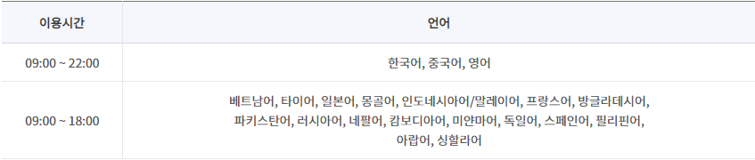
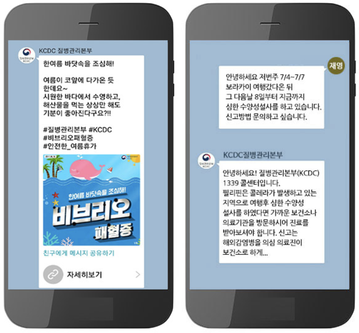
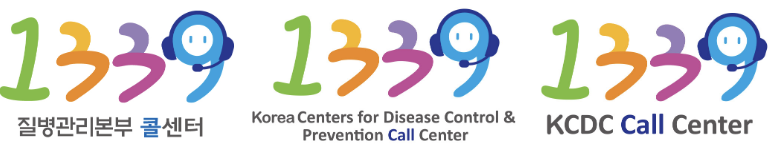
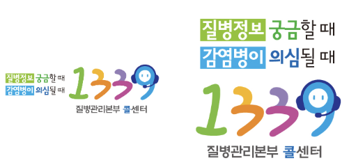

1339콜센터
작성일 2019-05-15ㅣ최종수정일 2020-03-31ㅣ담당부서 위기소통담당관ㅣ연락처 043-719-7794
- ☐ 소개
- · 질병정보 궁금할 때, 감염병이 의심될 때 질병관리본부 콜센터 ☎1339로 문의하세요!
- · 언제 어디서나 1339로 전화하시면, 질병관련 정보와 상담서비스를 신속하고 정확하게 제공해드립니다.

- ☐ 이용안내
- · 대표번호 : 국번없이 1339(무료)
- · 운영시간 : 365일 24시간
- 외국인 상담 : 상담을 원하는 국내 체류 외국인은 한국관광공사 관광안내센터(☎1330)와 법무부 외국인종합안내센터(☎1345)와의 3자통화를 통해 상담을 받으실 수 있습니다.
- ☎1330 관광통역안내전화 운영시간 및 상담언어(8개국어)
- 
- * 주요상담기능: 숙박예약, 교통, 문화, 입장권, 외국어통역 등
- ☎1345 외국인종합안내센터 운영시간 및 상담언어(20개국어)
- 
- * 주요상담기능: 외국인 행정 및 생활종합안내(출입국, 초청, 비자, 체류, 귀화, 난민, 이민 등)
- · 해외이용 안내 : 해외→국내에서 이용 시, +82-2-2633-1339, +82-2-2163-5945번으로 이용가능(유료)
- · 콜백서비스 : 상담원이 모두 통화 중일 경우, 상담 가능한 번호를 남기시면 상담원이 연락드리겠습니다.
- ☐ 상담안내
- · 주요 감염병(메르스, 지카바이러스 등) 상담 및 조치사항 안내
- · 해외여행 입ㆍ출국자에 대한 감염병, 필수 예방접종, 예방법 등 안내
- · 법정감염병 예방방법, 발생 신고 기준 및 절차 등 안내
- · 결핵안심국가 잠복결핵 관련 치료권유 및 상담안내
- · 질병관리본부 업무에 관련한 민원상담 및 담당자 연결
- ☐ 질병관리본부 카카오톡 서비스
- · 감염병, 만성질환, 예방접종 등 실생활에 필요한 질병·건강정보 제공
- · 언제 어디서나 카카오톡을 통한 실시간 1:1상담서비스
-
- ⚫ 카카오톡을 통한 질병·건강정보 제공 및 실시간 1:1 상담
- 
- ☐ 1339 콜센터 로고 및 슬로건
- ⚫ 로고(국문, 영문)
- 
- ⚫ 슬로건(가로형, 세로형)
- 